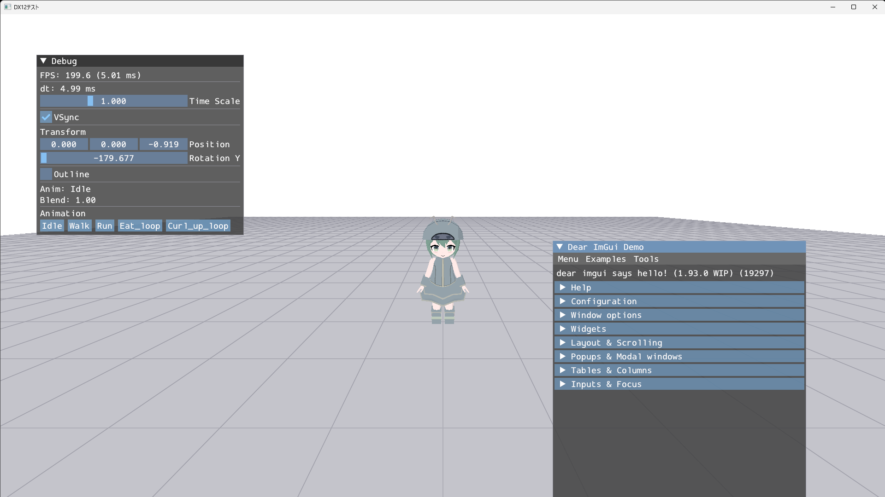
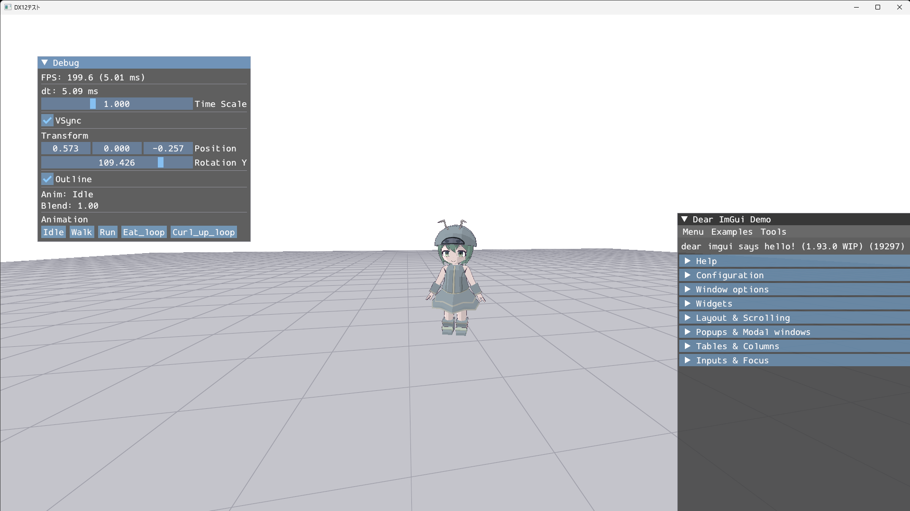

DirectX12Renderer
鋭意制作中!!
DirectX 12の学習のために、ゲームエンジンを使わず1から書いている自作レンダラーです。
ウィンドウを出すところから始めて、画面のクリア、三角形・四角形の描画、テクスチャ、
3Dモデルの読み込みと、順番に積み上げてきました。
当初の目標だった「自分がBlenderで作ったモデルをこのレンダラーで表示する」は達成できました。
現在はglTF（.glb）形式の自作モデルを読み込んで、トゥーンシェーディングと輪郭線をかけ、
WASDキーで歩かせたり走らせたりしながら、マウスで三人称カメラを回せるところまで動いています。
そのため今の目標は、このレンダラーを土台にして3Dアクションゲームを作ることです。
「レンダラー」から「ゲームの土台」へ、少しずつ変わってきました。
言語はC++20、APIはDirectX 12（Direct3D 12 / DXGI / DirectXMath / HLSL）で、
外部ライブラリはDirectXTex（画像読み込み）、cgltf（glTF読み込み）、
Dear ImGui（デバッグUI）の3つだけを使っています。

▲ 自作のglTFモデルを読み込んで、格子模様の地面の上に立たせている様子。
左上の「Debug」ウィンドウからフレームレートやアニメーションを切り替えられます。
（このスクリーンショットでは輪郭線をオフにしています）

▲ 表示している自作モデル（Blender / Substance Painterで制作）。
FingerGuiderのために作ったちびキャラで、
待機・歩き・走り・食事・丸まりのアニメーションが入っています。
・W / A / S / D：カメラから見た方向へ移動
・Shift（押しながら）：走る
・マウス右ドラッグ：カメラを回り込ませる
・O：輪郭線の表示 / 非表示を切り替え
・1 / 2 / 3：アニメーションをIdle / Walk / Runに切り替え
画面上の「Debug」ウィンドウ（Dear ImGui）からは、
FPSと1フレームの経過時間、ゲーム内時間の倍率（0で一時停止、0.5でスロー）、
垂直同期の切り替え、モデルの位置と向き、輪郭線の表示、
再生中のアニメーション名とクロスフェードの進み具合を確認・変更できます。
ここまでに実装した内容です。
【DirectX 12の基礎】
・ウィンドウの生成とDirect3D 12デバイスの初期化
・コマンドリスト／コマンドキュー／スワップチェーンによる画面クリア
・リソースバリアによる状態遷移
・頂点バッファ・インデックスバッファを用いたポリゴンの描画
・ルートシグネチャ／ディスクリプタヒープ／シェーダーリソースビューによるテクスチャ貼り付け
・画像ファイルの読み込み（DirectXTex）
・定数バッファと行列による座標変換（ワールド・ビュー・プロジェクション）
・深度バッファ
【PMDモデル（書籍で学んだところ）】
・PMDモデルの読み込みとマテリアルごとの描画
・トゥーンシェーディング／スフィアマップ（乗算・加算）／スペキュラ
・ボーンによるスキニング
・VMDファイルの読み込みとキーフレームアニメーションの再生（ベジェ曲線による補間）
【glTF（自作モデルの表示）】
・cgltfによる.glbの読み込みと描画（埋め込みテクスチャ、アルファブレンド）
・スキニング（ノード階層、逆バインド行列、4ボーンのブレンド）
・アニメーションの再生（STEP / LINEAR補間、ループ）
・アニメーションのブレンド（2本を同時にサンプリングしてクロスフェード）
【見た目】
・トゥーンシェーダー（ハーフランバートの階調量子化）
・輪郭線の描画（法線方向への押し出しによる背面法）
・地面の描画（ピクセルシェーダーで描く格子模様）
・マルチパスレンダリング（オフスクリーンのテクスチャへ描いてから画面へ転送）
【ゲームの土台】
・デルタタイムによるフレームレート非依存の更新（タイムスケール、VSyncの切り替え）
・入力の管理（「押している間」と「押した瞬間」の区別、マウスの移動量）
・キャラクターの移動（カメラ基準の移動方向、進行方向への旋回、速度に応じたアニメーション切り替え）
・三人称カメラ（対象への追従、マウスでの回り込み）
・Dear ImGuiによるデバッグUI
最初はすべてmain関数に書いていましたが、行数が増えて読みづらくなってきたので、
役割ごとにクラスへ切り出しました。
現在は次のように分けています。
・Application：ウィンドウの生成とメッセージループ、各オブジェクトの所有、プレイヤーの操作
・Dx12Wrapper：デバイス、スワップチェーン、コマンド関連、フェンス、
レンダーターゲット、深度バッファ、シーン共通の定数バッファ、カメラ行列
・GltfRenderer：ルートシグネチャとパイプラインステート（通常・半透明・輪郭線）
・GltfActor：モデルの読み込み、スキニング、アニメーション、描画、位置と向き
・Ground：地面の板ポリ（独自のパイプラインを持つ）
・Pera：マルチパスレンダリングの2パス目に使う、画面いっぱいの板ポリ
・Camera：三人称カメラ
・Input：キーボードとマウスの状態
・GameTimer：デルタタイムとタイムスケール
・DebugUI：Dear ImGuiの初期化とフレーム管理
特に意識したのが、Renderer（描き方）とActor（描かれるデータ）を分けることです。
パイプラインはモデル間で共通なので1回設定すれば済みますが、
頂点バッファやマテリアルはモデルごとに違います。
ここを分けておくと、後からモデルを複数体出すときにパイプラインを使い回せます。
PMD時代のPMDRenderer／PMDActorも、同じ考え方のまま残してあります。
DirectX 12はDirectX 11と違って、GPUに渡すリソースの置き場所を
自分で設計しないといけないのが最初の壁でした。
このレンダラーでは、シェーダーに渡すものを次のように割り当てています。
・b0：シーン共通の行列（ビュー・プロジェクション・視点座標）── シーンに1つ
・b1：ワールド行列とボーン行列（256本ぶん）── アクターごとに1つ
・b2：マテリアル（ベースカラー係数）── マテリアルごとに1つ
・t0：ベースカラーのテクスチャ
b0はシーン中で1つですが、b2とt0はマテリアルの数だけ必要になります。
そこでディスクリプタヒープには「CBV1つ＋SRV1つ」を1セットとして
マテリアルの数だけ並べ、描画時はインデックスバッファのオフセットと
ディスクリプタの位置を同時にずらしながら、マテリアル単位で描いています。
glTFはメッシュがマテリアルごとに「プリミティブ」へ分割されているので、
全部の頂点とインデックスを1本のバッファに詰めたうえで、
プリミティブごとに描画範囲（開始位置と個数）を記録して個別に描いています。
自作モデルを出すために、PMDに代わってglTF（.glb）を読み込むようにしました。
パースにはcgltfという1ファイルのライブラリを使っています。
一番苦労したのが座標系です。
glTFは右手系、こちらの描画は左手系なので、読み込むときにすべて変換する必要があります。
・位置・法線・平行移動：zの符号を反転する
・クォータニオン：回転軸が鏡映されるのでxとyが反転する
・4x4行列：行と列の「どちらか一方だけ」がzの要素を符号反転する
・インデックス：面の裏表が反転するので、三角形の巻き順を入れ替える
怖いのは、頂点と法線だけ変換してノード階層やアニメーションの変換を忘れても、
棒立ちのバインドポーズでは何も起きず、アニメーションを再生して初めて破綻することです。
実際にこれで一度ぐちゃぐちゃになったので、変換は3つの関数に集約して
「新しいデータを読み込むときは必ずここを通す」と決め、コメントにも残しました。
またzを反転した結果モデルの正面が-Zを向いてしまうので、
読み込み側でπだけ回す補正を入れ、ゲーム側のコードでは
「向きが0なら+Zを向いている」と素直に扱えるようにしています。
モデルの頂点は、それぞれ「どのボーンにどれくらい影響されるか」の情報を持っています。
glTFでは4本ぶんのボーン番号とウェイトが入っているので、
頂点シェーダー側で4つのボーン行列をウェイトで混ぜ合わせ、頂点を追従させています。
ボーン行列は、ノードの親子関係をたどってグローバル変換を積み、
逆バインド行列と合成して作ります。
ここで引っかかったのが、glTFのノード配列は
「親が子より先に並んでいる」保証がないことです。
配列の順に計算すると、親がまだ更新されていない状態で子を計算してしまうので、
最初にルートから深さ優先でたどった順序を作っておき、毎フレームその順に計算しています。
アニメーションは、ノードごとの「位置・回転・スケールを時刻で動かす」チャンネルの集まりです。
現在時刻を挟む2つのキーを探して、回転はクォータニオンの球面線形補間、
位置とスケールは線形補間でつなぎます。STEP補間のカーブにも対応しています。
歩きから走りへ切り替えたときにパッと切り替わるのが気になったので、
アニメーションのブレンドも入れました。
切り替えの瞬間に前のアニメーションを「移行元」として残しておき、
0.2秒かけて2本を同時にサンプリングし、ノードの位置・回転・スケール単位で混ぜています。
ポーズそのものを混ぜているので、途中で何度切り替えても破綻しません。
自作モデルはアニメ調の見た目にしたかったので、シェーダーを自分で書き直しました。
ピクセルシェーダーでは、ライトと法線の内積をそのまま明るさにするのではなく、
ハーフランバート（-1〜1を0〜1に写し直す）にしてから4段階に量子化しています。
生の内積のままだと裏側がすべて0に潰れてしまい、影側に階調を作れないためです。
段の境目はsmoothstepでほんの少しだけなめらかにして、
ジャギーが目立たないようにしています。
輪郭線は、モデルをもう一度、法線方向へ少しだけ押し出して
表面をカリングしながら暗い色で描く「背面法」です。
ここで2つハマりました。
ひとつは、輪郭線も本体と同じボーン行列でスキニングしないといけないこと。
忘れるとアニメーション中に輪郭線だけがバインドポーズに取り残されます。
もうひとつは、フラットシェーディングのモデルだと輪郭線が継ぎ目で裂けることです。
フラットな面は同じ座標に複数の（別々を向いた）法線が割り当てられているので、
そのまま押し出すとメッシュがバラバラに広がってしまいます。
そこで、位置が同じ頂点の法線を平均したものを
「押し出し専用の法線」として別に持たせるようにしました。
シェーディングに使う法線は元のままなので、フラットな見た目は保たれます。

▲ 輪郭線を有効にした状態。
ページ上部のスクリーンショットは輪郭線をオフにしたもので、見比べると違いが分かります。
ポストエフェクトをかけられるようにするための土台として、
描画を2つのパスに分けました。
・1パス目：画面ではなく、オフスクリーンのテクスチャへシーンを描く
・2パス目：そのテクスチャを、画面いっぱいの板ポリに貼って表示する
同じリソースを「描き込む対象」と「読み取るテクスチャ」の両方で使うので、
パスの前後でリソースバリアを張り、レンダーターゲット状態と
シェーダーリソース状態を行き来させています。
デバッグUIはあえて2パス目のあとに描いています。
こうしておくと、今後ぼかしなどの効果を入れてもUIは影響を受けず、常に読める状態で残ります。
現時点ではテクスチャをそのまま出しているだけで見た目は変わりませんが、
ここに処理を挟めばポストエフェクトになる、という状態まで持ってこられました。
モデルが表示できたので、次は「動かせる」ようにしました。
【時間】
フレームレートに左右されないよう、1フレームの経過時間（デルタタイム）で更新しています。
ウィンドウをドラッグしている間やブレークポイントで止めている間はループが進まず、
再開した瞬間に数秒ぶんの経過時間が来てキャラクターが吹き飛ぶので、上限で切り詰めています。
ついでにタイムスケールも入れて、スローや一時停止をデバッグUIから試せるようにしました。
【入力】
前フレームのキー状態を保持して、「押している間」と「押した瞬間」を区別できるようにしました。
移動は押している間、アニメーションの切り替えは押した瞬間、と使い分けています。
【カメラと移動】
三人称カメラは、注視点をキャラクターの少し上に置き、
そこから見ている方向の反対側へ一定距離だけ離した位置に毎フレーム置き直しています。
マウス右ドラッグで回り込めますが、真上・真下を越えると映像がひっくり返るので手前で止めています。
移動はカメラの向きが基準です。Wを押したらカメラの奥方向へ進みます。
体の向きは、進行方向へ一気に向けると不自然なので補間しながら回しています。
また速度に応じてWalkとRunを切り替え、入力が無ければIdleへ戻すようにしました。
【地面】
位置の感覚がつかめるよう、格子模様の地面を描いています。
模様はテクスチャではなくピクセルシェーダーで計算していて、
1ピクセルあたりに進む距離を見ながら線の太さを決めているので、
カメラが遠ざかっても線がちらつきません。
glTFに移る前は、書籍にならってPMD形式のモデルを描画していました。
トゥーンシェーディングやスフィアマップを効かせつつ、
VMDファイルのモーションに合わせて踊らせるところまで実装しています。
VMDはキーフレームごとにベジェ曲線の補間パラメーターを持っているので、
単純な等速の補間ではなく、ベジェ曲線からxに対応するyを求めて補間の割合に使いました。
これを入れると、動きの緩急がMMDで再生したときと同じになります。
ここで身につけた「スキニングとキーフレーム補間の考え方」が、
そのままglTF側の実装に生きています。
コードはPMDActor／PMDRendererとして今も残してあります。

▲ PMDモデルを読み込み、VMDファイルのモーションを再生している様子。
トゥーンシェーディングによる段階的な陰影と、ボーンによるスキニングが効いています。
※ スクリーンショットに使用している3Dモデルは、MikuMikuDance（樋口優氏）に同梱されている
「初音ミク ver.1.3」モデルです。
モデリング：あにまさ氏 ／ データ変換：京 秋人氏 ／ Copyright：CRYPTON FUTURE MEDIA, INC
※ モデルデータは本サイトおよびGitHubリポジトリでは配布していません。
※ キャラクター「初音ミク」は クリプトン・フューチャー・メディア株式会社 の著作物であり、
ピアプロ・キャラクター・ライセンスに基づく非営利の利用です。
© Crypton Future Media, INC. www.piapro.net
【ファイル構造体のサイズが1バイトでもずれると全部壊れる】
PMDやVMDはファイル上のバイト列をそのまま構造体に読み込みます。
ところがC++の構造体は勝手にパディングが入るため、
そのまま読むとサイズがずれて、それ以降の読み込みが全滅します。
#pragma pack(1)でパディングを止めたうえで、
static_assertで構造体のサイズをコンパイル時に検査するようにしました。
「実行して初めて壊れていることに気付く」という状況をなくせたのが大きかったです。
【行列の掛ける順番が逆になる】
HLSL側は既定で列優先なので、C++側で考えていた順番と
シェーダー内での掛ける順番が逆になります。
ここを間違えるとモデルが消えたり、あらぬ方向へ吹き飛んだりして、
原因を探すのに一番時間を使いました。
【ディスクリプタヒープは同時に1本しかバインドできない】
CBV_SRV_UAVのディスクリプタヒープは同時に1本しか設定できず、
切り替えるとそれ以前に設定したディスクリプタテーブルは無効になります。
そのためモデルとデバッグUIがそれぞれヒープを持ち、描画のたびに設定し直しています。
【レンダーターゲットの形式が食い違っていた】
レンダーターゲットのフォーマットと、パイプラインステートに書いたフォーマットが
食い違うと実行時にエラーになります。
自前のパイプラインを持つクラスが増えるほど起きやすく、
「描き先の設定」と「描き方の設定」は必ずセットで確認するようになりました。
【アニメーションがカクついた】
最初は経過時間の取得にtimeGetTimeを使っていたのですが、
分解能が既定で約15.6msしかなく、60fpsだと経過時間が不規則に飛んでしまいます。
単調増加が保証されているstd::chrono::steady_clockに変えたところ、滑らかになりました。
【初期化に失敗したときの切り分け】
ウィンドウの表示をモデル読み込みより前に持ってくるようにしました。
こうしておくと失敗したときに「ウィンドウすら出ない＝ウィンドウ生成の失敗」、
「ウィンドウは出たが真っ黒＝そこから先の失敗」と切り分けられます。
地味ですが、デバッグのしやすさがかなり変わりました。
目標は、このレンダラーを土台にした3Dアクションゲームです。
マルチパスレンダリングの土台ができたので、次はそこに処理を挟んで
ポストエフェクトに挑戦したいです。あわせて影（シャドウマップ）も入れたいと考えています。
ゲームとしては、攻撃のアクションや当たり判定、
地形とのやりとりといったところを少しずつ足していく予定です。
・言語：C++20
・IDE：Visual Studio 2026（プラットフォームツールセット v145）
・プラットフォーム：x64 / Windows 10・11
・API：Direct3D 12 / DXGI / DirectXMath / HLSL
・ライブラリ：DirectXTex（画像読み込み） / cgltf（glTF読み込み） / Dear ImGui（デバッグUI）
学習にあたっては「DirectX
12の魔導書 3Dレンダリングの基礎からMMDモデルを踊らせるまで」を参考にしています。
ソースコードはMIT Licenseで公開しています。
ただし同梱している自作モデル（DangoGirl.glb）はMIT Licenseの対象外で、
動作確認用に置いているものなので、転載・再配布・改変はご遠慮ください。
また、リポジトリには再配布が許可されていないアセット（PMDモデルやVMDモーション）は
含めていません。動かす場合はREADMEの手順に沿って各自でご用意ください。